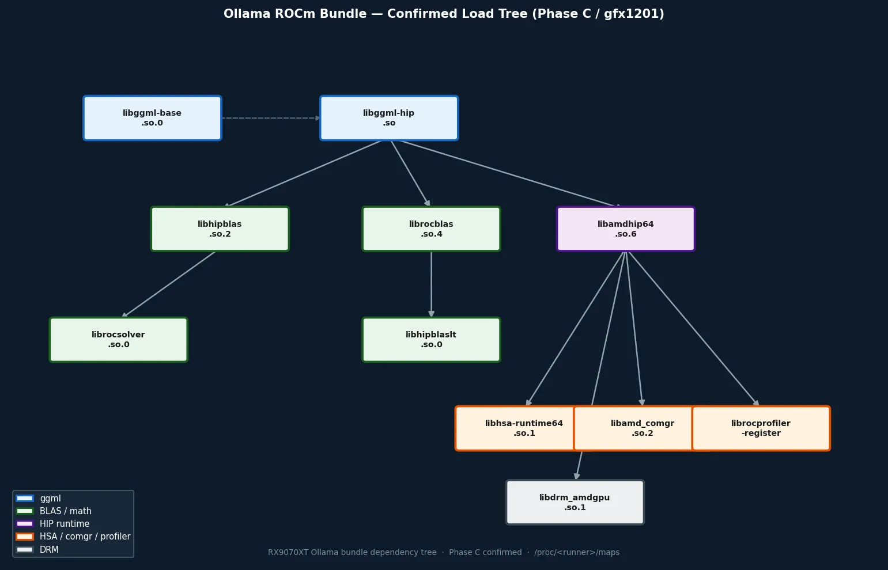

このページで得られる理解：Ollama が system ROCm とは独立した bundle-first stack で動作すること、12 ライブラリの依存チェーンが確認されていること、そして「ロードされている ≠ 使われている」という重要な区別。
What you'll gain here: Ollama runs on a bundle-first stack independent of system ROCm; a 12-library dependency chain is confirmed; and the critical distinction that "loaded ≠ dispatched."
Ollama は GPU 推論に ROCm を使うが、system にインストールされた ROCm をそのまま使うわけではない。
/usr/local/lib/ollama/rocm/ 以下の自前バンドルを優先し、system ROCm より先にロードする。
このページでは、RX9070XT 実機での Phase C 観測でどのライブラリが実際にロードされたか、
そしてそのロードが何を意味し、何を意味しないかを記録する。
Ollama uses ROCm for GPU inference, but not the system-installed ROCm directly.
It prioritizes its own bundle under /usr/local/lib/ollama/rocm/, loading it before system ROCm.
This page records which libraries were actually loaded in Phase C observation on RX9070XT,
and what that loading does — and does not — tell us.
/proc/maps で 12 ライブラリのロードを確認した。
依存チェーンの構造は libggml-hip.so を頂点に、BLAS → HIP → HSA → DRM の層として読める。/proc/maps.
The dependency chain structure reads as layers: libggml-hip.so at the top, then BLAS → HIP → HSA → DRM.観測ポイント： Ollama は system ROCm とは別の stack を使っているのか？ 使っているとしたらどの層がどこから来るのか？
Observation target: Does Ollama use a separate stack from system ROCm? If so, which layer comes from where?
GPU 推論の経路を調査するうえで、「どのバイナリが実際に実行されているのか」を特定することは不可欠だ。
system ROCm の /opt/rocm/ と Ollama bundle の /usr/local/lib/ollama/rocm/ が共存する環境では、
どちらが使われているかを確認しないと、調査の土台が揺らぐ。
Identifying "which binary is actually being executed" is essential for any investigation of GPU inference paths.
In an environment where system ROCm at /opt/rocm/ and Ollama's bundle at /usr/local/lib/ollama/rocm/ coexist,
failing to confirm which one is used undermines the entire investigation's foundation.
llm/server.go 内で LD_LIBRARY_PATH と OLLAMA_LIBRARY_PATH を bundle root で先行設定する。
つまり、同名のライブラリが system にあっても bundle 側が優先される。
Phase C で /proc/maps を確認し、すべてのロード済みライブラリが bundle 側から来ていることを確認した。
What was confirmed:
Ollama runner sets LD_LIBRARY_PATH and OLLAMA_LIBRARY_PATH to the bundle root in llm/server.go.
This means the bundle takes priority over any system library of the same name.
Phase C confirmed via /proc/maps that all loaded libraries come from the bundle side.
→ 次の問い： では bundle には具体的にどのライブラリが含まれ、どんな依存関係があるのか？
→ Next question: Specifically, which libraries are in the bundle, and how are they related?

クリックで拡大 · Phase C で確認した 12 ライブラリの依存関係（有向グラフ）
Click to enlarge · Dependency graph of 12 libraries confirmed in Phase C
観測ポイント： /proc/<runner>/maps に実際に現れたライブラリは何か。
Observation target: Which libraries actually appear in /proc/<runner>/maps?
| ライブラリLibrary | 依存経路Load Route | 役割Role |
|---|---|---|
libggml-base.so.0.0.0 |
直接Direct | ggml 基盤ランタイムggml base runtime |
libggml-hip.so |
直接（rocm/）Direct (rocm/) | HIP backend + .hip_fatbin（587 MiB, gfx1201 hsaco 格納）HIP backend + .hip_fatbin (587 MiB, gfx1201 hsacos) |
libhipblas.so.2.3.60303 |
libggml-hip.so NEEDEDNEEDED by libggml-hip.so | hipBLAS API 層hipBLAS API layer |
librocblas.so.4.3.60303 |
libggml-hip.so NEEDEDNEEDED by libggml-hip.so | rocBLAS 本体（Tensile kernel を持つ）rocBLAS core (carries Tensile kernels) |
libhipblaslt.so.0.10.60303 |
librocblas.so.4 NEEDEDNEEDED by librocblas.so.4 | hipBLASLt（大規模 GEMM 向け）hipBLASLt (large-scale GEMM) |
librocsolver.so.0.3.60303 |
libhipblas.so.2 NEEDEDNEEDED by libhipblas.so.2 | rocSOLVER（線形代数ソルバ）rocSOLVER (linear algebra solver) |
libamdhip64.so.6.3.60303 |
libggml-hip.so NEEDEDNEEDED by libggml-hip.so | HIP runtime 本体HIP runtime core |
libhsa-runtime64.so.1.14.60303 |
libamdhip64.so.6 経由via libamdhip64.so.6 | HSA ランタイム（GPU dispatch の基盤）HSA runtime (basis of GPU dispatch) |
libamd_comgr.so.2.8.60303 |
libamdhip64.so.6 経由via libamdhip64.so.6 | Code Object Manager（hsaco ロード等）Code Object Manager (hsaco loading, etc.) |
librocprofiler-register.so.0.4.0 |
libamdhip64.so.6 経由via libamdhip64.so.6 | profiler 登録 hook（observer 問題と関連）Profiler registration hook (related to observer problem) |
libdrm.so.2.123.0 |
libamdhip64.so.6 経由via libamdhip64.so.6 | DRM カーネルインターフェースDRM kernel interface |
libdrm_amdgpu.so.1.123.0 |
libamdhip64.so.6 経由via libamdhip64.so.6 | AMDGPU 固有 DRMAMDGPU-specific DRM |
rocblas/library/ |
librocblas.so.4 が参照referenced by librocblas.so.4 | gfx1201 ターゲット 56 ファイル（Kernels.so + TensileLibrary variants）56 gfx1201-targeted files (Kernels.so + TensileLibrary variants) |
| 示せることCan Show | 示せないことCannot Show |
|---|---|
| Ollama が bundle-first で動作し、system ROCm より bundle を優先すること Ollama operates bundle-first, prioritizing the bundle over system ROCm | system ROCm と bundle の version 差異が動作に影響するケース（未観測） Cases where version mismatch between system ROCm and bundle affects behavior (not yet observed) |
12 ライブラリが /proc/maps に現れていること（ロードの事実）
12 libraries appear in /proc/maps (the fact of loading)
|
それぞれのライブラリの演算が実際に dispatch されたか（load ≠ dispatch） Whether each library's operations were actually dispatched (load ≠ dispatch) |
| 依存チェーンの構造（libggml-hip.so → BLAS → HIP → HSA → DRM の層） Dependency chain structure (libggml-hip.so → BLAS → HIP → HSA → DRM layers) | 各ライブラリが推論の何フェーズで、何回呼ばれたか How many times each library was called and in which inference phase |
| gfx1201 ターゲットの rocBLAS ファイルが 56 本存在すること 56 gfx1201-targeted rocBLAS files exist | そのうち live run で実際に使われたファイルはどれか Which of those files were actually used in a live run |